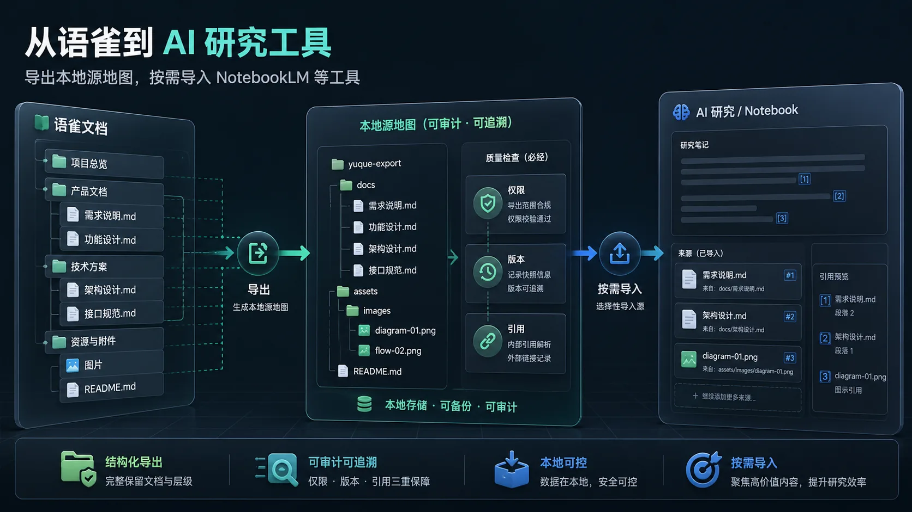
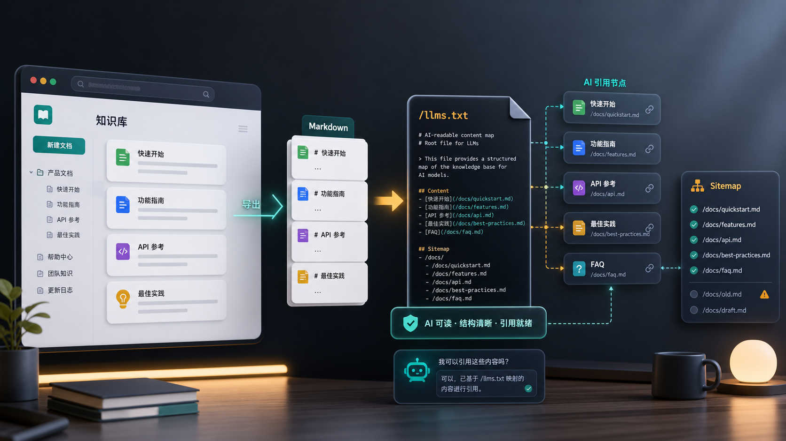
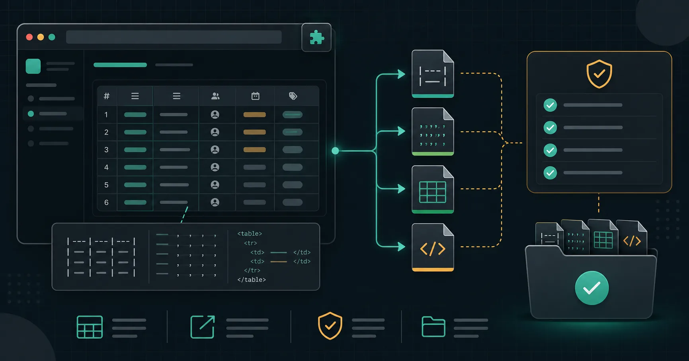

用户故事
语雀里存了三年的笔记，我花了30分钟全部「抢救」到了本地
400多篇文档分散在七八个知识库里，公司要迁移飞书，手动导出要3小时+。最终找到一个"所见即所得"的方案，30分钟全部搞定，包括无权限的协作文档和收藏夹。
覆盖语雀知识库批量导出、Markdown 转换、AI 浏览器来源治理、Gemini Workspace Sources 权限清单、ChatGPT Dropbox Sync 权限清单、ChatGPT SharePoint Sync 权限清单、ChatGPT Apps with Sync 权限清单、Gemini Apps Notebooks 权限边界、Gemini Notebook 交接治理、NotebookLM 来源发现、AI 来源包与引用验收、敏感资料导出分级、图片本地化、NotebookLM 来源包、llms.txt、企业内部 RAG、静态博客迁移、OpenAI File Search、AI 搜索引用、AI 知识库权限治理、客服 AI 知识库，以及迁移到 Dify、NotebookLM、Obsidian、Notion、飞书文档的实操流程。
400多篇文档分散在七八个知识库里，公司要迁移飞书，手动导出要3小时+。最终找到一个"所见即所得"的方案，30分钟全部搞定，包括无权限的协作文档和收藏夹。

AI 浏览器可能读取网页、标签页、历史、文件和连接器资料，语雀内容应先用 YuqueOut 本地导出、分包并验收来源边界。

Gemini 可使用 Drive 固定来源和 Workspace 搜索位置，语雀资料应先用 YuqueOut 本地导出、分包并验收权限边界。

ChatGPT Dropbox sync 会读取文档内容、元数据和共享设置，语雀资料应先用 YuqueOut 本地导出、清洗分包并验收格式与权限。
ChatGPT SharePoint sync 会预先索引站点文件，语雀资料应先用 YuqueOut 本地导出、清洗分包并验收 RBAC 和敏感标签。
ChatGPT Google App 涉及 Drive 文件动作和 OAuth 范围，语雀资料应先用 YuqueOut 本地导出、清洗成同步包并验收。
ChatGPT 同步应用会索引连接资料源，语雀资料应先用 YuqueOut 本地导出、清洗敏感内容、拆权限包并验收。
Gemini Apps Notebooks 与 Gemini Notebook 同步后，语雀资料应先本地导出、分权限包，再验收 Web 搜索混用和引用边界。
NotebookLM 更名为 Gemini Notebook 后，语雀资料应先本地导出、分权限包、写来源地图，再验收引用和共享边界。

NotebookLM 能发现 Web 和 Drive 来源后，语雀资料仍要先本地导出、建立来源地图、筛权限和验收引用。
先用 YuqueOut 本地导出 Markdown、PDF 和图片，再按问题、权限和更新负责人拆来源包，导入后验收引用质量。
先用 YuqueOut 导出 Markdown、PDF 和本地图片，再按 NotebookLM 来源类型、数量边界、权限范围和引用验收设计来源包。

先用 YuqueOut 导出 Markdown 和本地图片，再筛选核心公开页面，编写 AI 可读的 llms.txt 内容地图。

先用 YuqueOut 本地导出 Markdown 和图片，再按业务、权限、更新节奏和责任人拆分企业内部 RAG 资料包。

把语雀画板、白板、流程图和思维导图导出为本地图片，再放入 Markdown、Obsidian、静态博客或 AI 知识库。

用 YuqueOut 导出 Markdown 并保存本地图片，检查 assets、相对路径、断网预览和 AI 知识库导入前的图片完整性。

先用 YuqueOut 导出 Markdown 和本地图片，再整理 URL、内链、FAQ、结构化数据、sitemap 和 llms.txt。
用 YuqueOut 导出 Markdown 和本地图片，再按权限拆分 vector store，配置元数据并用真实问题验证检索质量。

先用 YuqueOut 导出 Markdown 和本地图片，再整理 FAQ、answer capsule、来源链接、结构化数据和 llms.txt。


先把语雀导出为 Markdown 和本地图片，再按 Dify、NotebookLM、OpenAI File Search 或企业 RAG 平台要求导入和验收。

用 YuqueOut 准备语雀 Markdown 资料包，再在 Dify 中创建知识库、配置分段并用真实问题验证检索质量。
适合围绕项目、调研和培训资料建立 Notebook 来源，先导出语雀 Markdown/PDF，再检查引用和图文上下文。

先批量导出 Markdown 和本地图片，再打开 Obsidian Vault，按目录、双链、反向链接整理成可长期维护的本地知识库。

覆盖 Text & Markdown 导入、ZIP 批量导入、图片附件相对路径、大知识库分批迁移和导入后抽查清单。

按飞书文件夹、我的文档库、知识库的导入能力选择 Markdown、Word 或 ZIP，避免把所有内容塞进同一种格式。